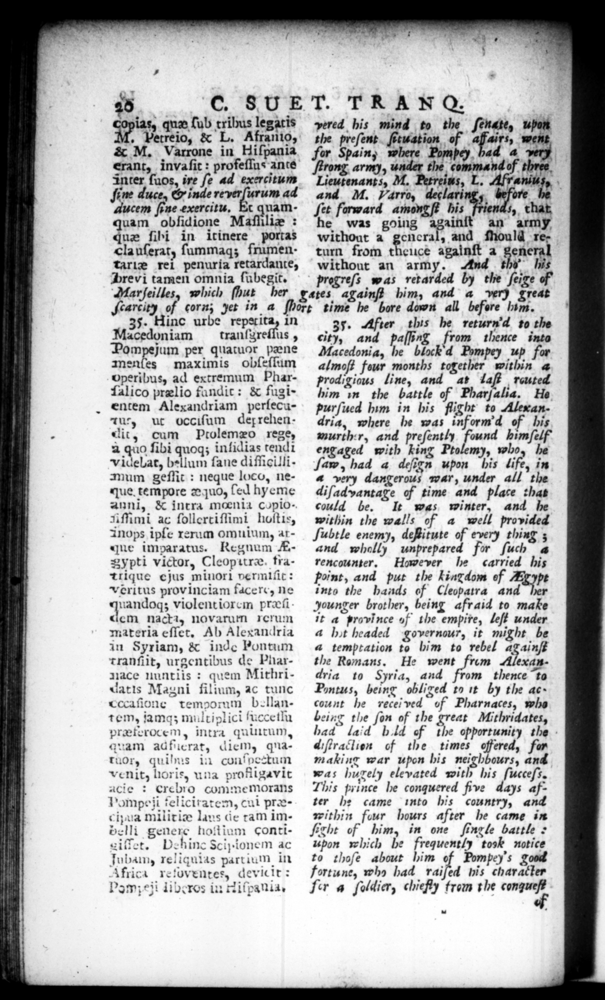

car — — — > — —= — = * — —— — — WL" — — 5 2 * Pew . — — Der . — — — —— ———— ͤ— 2 = — 5 — ͤ äÆ“uꝓu—¾—: — —— • äbÜ— — — 15 c. SU ET. TRA N O. ias, que ſub tribus legatis Petreio, & L. Afranio, & M. Varrone in Hiſpania erant, invaſit : profeſſus ante inter ſuos, ire ſe ad exercĩitum ſine duce, & inde reverſurum ad aucem ſine exercitu. Et quamquam obſidione Maſſiliæ: que ſibi in itinere portas cla uſerat, ſummaqz frumentariæ rei penuria retardante, Hrevi tamen omnia ſubegit. Marſeilles, which ſhut her 35. Hinc urbe repet ita, in Macedoniam tranſyreilus , Pompejum per quatuor pane SR maximis obſeſſum operibus, ad extremum Pharſalico prelio fundit: & fugtentem Alexandriam perſecutut, ut occiſum deprehendit, cum Ptolemæo rege, a quo ſibi quoq; infidias tendi videbat, bellum fane diſſiollli mum geſſit: neque loco, neque. tempore quo, ſed hy eme anni, & intra meœnia copioAſſimi ac ſollertiſſimi hoſtis, 3nops ipſe rerum omutum, atque imparatus. Regnum A. ypti victor, Cleopitræ. tratrique ejus minort vermiſit: Veritus provinciam facere, ne 2 violent iorem pra dem Nacti, novarum rerum materia eſſet. Ab Alexandria in Syriam, & inde Pontum tranſiit, urgentibus de Pharnace nuntiis: quem Mithridatis Magni filium, ac tunc cccaſione temporum bollantem, jamq; miiltiplict ſucceſſu prœterocem, intra quuitum, quam adtficrat, diem, quatuor, quilns in conſpectum venity horie, una profligavit acie: ercbhro commemorans Pompeil telicitatem, cui præcizua militiæ lavs de tam imbelli genere hoſtium contieiffet, Dehinc Scipionem ac Tubam, reliquias partium in Africa retoventes, deviit: Pom;eji Iiberos in Hiſpanla. for Spaing where turn from theuce againſt a vered his mind to the ſendte, upon the preſent. ſituation of affairs, went Pompey, bad a_wery ſtrong, army, under the command of three. Lieutenants, M. Petreins, L. Afranius, and M. Varro, declari fore he ſet forward amongſt his friends, that he was going againſt an army without a gcncral, and ſhould reeneral without an army. thi” his ' progreſs was retarded by the ſeige of | Cates againſt him, and a ver) great ſcarcity of corn; yet in a ſhort time he bore down all before hum. 25. After this he return d to the City, and paſſing from thence into Macedonia, he block d Pompey up for almoſt four months together within 4 prodigiaus line, and at laſt rauted him in the battle of Pharjalia. He purſued him in his flight to Alexandria, where be was inform d of his wurth:r, and preſently 4 himſelf engaged with king Ptolemy, who, he ſaw, had a deſign upon his life, in 4 very dangerous war, under all the diſadyantage of time and place that could be, It was winter, and he within the walls of a well provided ſubtle enemy, deſtitute of every thing; and wholly unprepared for ſuch 4 rencounter, However he carried his point, and put the kingdom of Ahr into the hands of Cleopatra and her younger brother, being afraid to make it a province of the empire, leſt under a hit headed governour, it might be a temptation to bim to rebel againſt the Romans. He went from Alexandria to Syria, and from thence "to Pontus, being obliged tn it by the ac; count he received of Pharnaces, who being the ſon of the great Mithridates, had laid bd of the opportunity the diſtraclien of the times offered, far makin war upon bis neighbours, and was hugely elevated with his ſucceſs, This prince he conquered five days after h: came into his country, and within four hours after he came in ficht of him, in one ſingle battle upon which be frequently took notice to thoſe about him of Pompey's good fortune, who had raiſed his character fer a ſoldier, chiefly trom the *
